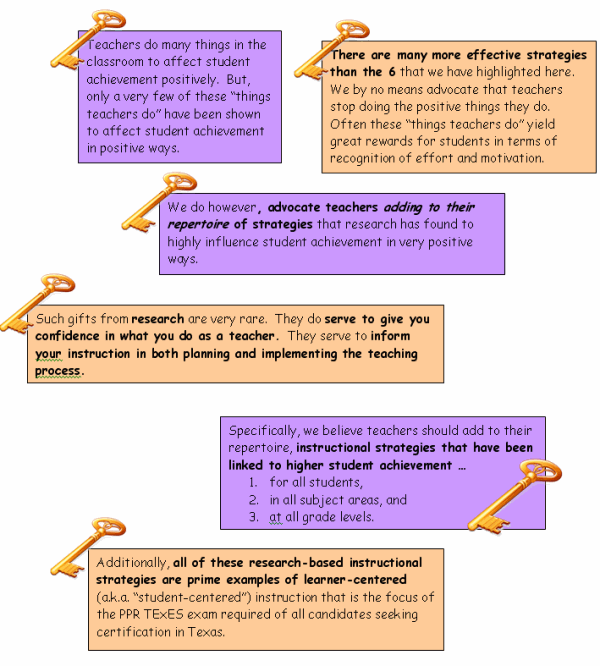
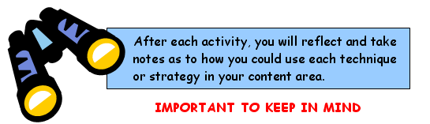

|
Take a look at the 6 research based instructional strategies and the ACT institute components where you can expect to see the strategies modeled:
6 Research-Based
Instructional Strategies
|
Related Components
of act*Institute
|
|
1. Cooperative Learning Groups
|
1. All Components of Institute
|
|
2. Identifying Similarities and Differences
|
2. Classroom/Behavior Management Equity
|
|
3. Nonlinguistics Representation /Graphic Organizers
|
3. Frameworks and Reading
|
|
4. Homework and Practice
|
4. Frameworks and Curriculum
|
|
5. Advanced Organizers
|
5. Reading
|
|
6. Cues and Questions
|
6. Frameworks and Reading
|
In each activity of this module, you will be introduced to the DESIGN and IMPLEMENTATION TECHNIQUES for each of the research based instructional strategies.
You will also be introduced to additional resources to help you better understand the rationale behind using these strategies to create a highly effective classroom.

|
Start building your
Frameworks Notebook
|
|
Before you tackle the task of learning about the strategies, there are some key elements that need to be stressed and understood.


ACT staff will be looking for evidence of you using these research based
instructional strategies when you are observed during your internship.
The state's observation instrument (the PDAS)
highly rewards the use of these strategies in teaching!
Through the FRAMEWORKS MODULE you will be viewing mini video clips of the actual strategy being studied or class discussions that will enhance your understanding of the content.
Two things are important to learn through the demonstrations:
- the actual content is vital information for you to learn which can be applied to your teaching experience and for the TExES exams, AND
- the actual strategy used by the instructor to teach the information
The ultimate process will ask the participant to make connections to actual classroom teaching. You will be asked to reflect and determine how the demonstration of the strategy learned will inform instructional practices. How will you plan instruction now that you know the strategy?
Now that you have completed the Introduction and Rationale, you may complete the Activity 1 Summary Page found in your handouts and start your Frameworks Notebook!
|